library(DT)
N = 1000 #number of measurements
x1 = sample(1:6,N, replace=T) # first dice (values are from 1 to 6)
head(x1,20) # head [1] 1 3 5 2 6 2 1 2 5 1 4 4 2 6 5 6 6 3 1 6Session 1


sample()library(DT)
N = 1000 #number of measurements
x1 = sample(1:6,N, replace=T) # first dice (values are from 1 to 6)
head(x1,20) # head [1] 1 3 5 2 6 2 1 2 5 1 4 4 2 6 5 6 6 3 1 6barplot(table(x1))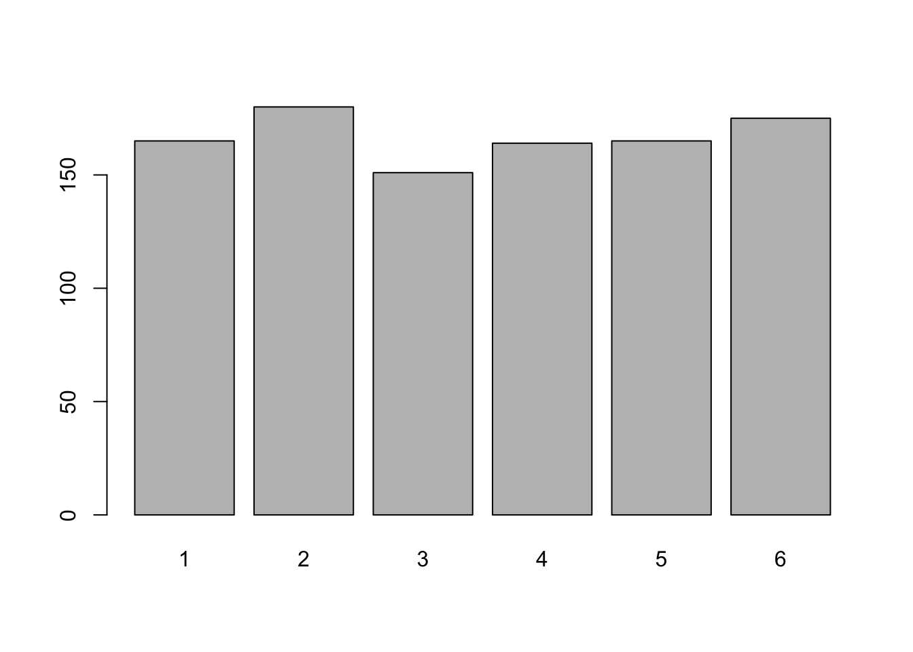
barplot(table(x1 = sample(1:6,100000, replace=T)))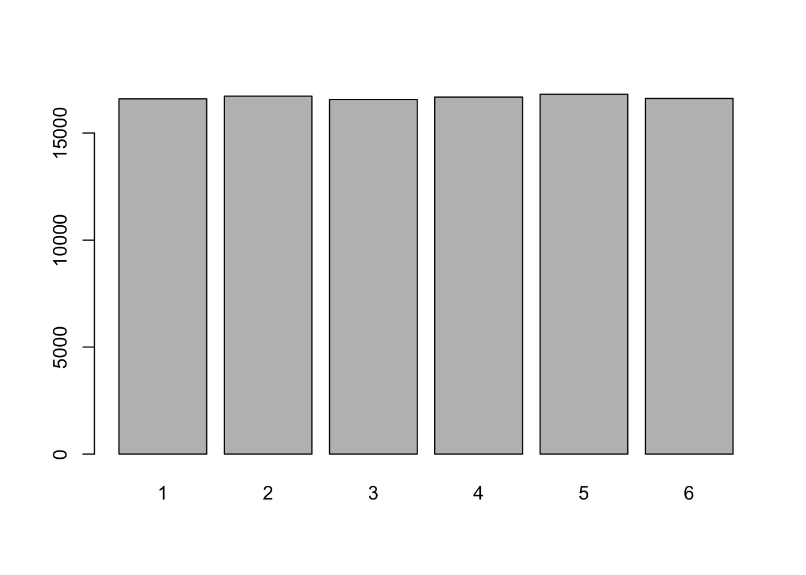
barplot(table(x1 = sample(1:6,100000, replace=T))/100000)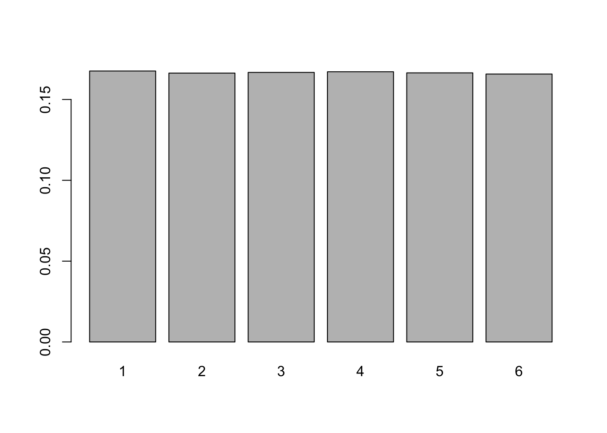
library(DT)
N = 10000 #number of measurements
x1 = sample(1:6,N, replace=T) # first dice (values are from 1 to 6)
x2 = sample(1:6,N, replace=T) # first dice (values are from 1 to 6)
y = x1 + x2
head(y)[1] 7 7 3 2 6 8mean(y)[1] 6.9989sd(y)[1] 2.426497summary(y) Min. 1st Qu. Median Mean 3rd Qu. Max.
2.000 5.000 7.000 6.999 9.000 12.000 barplot(table(y))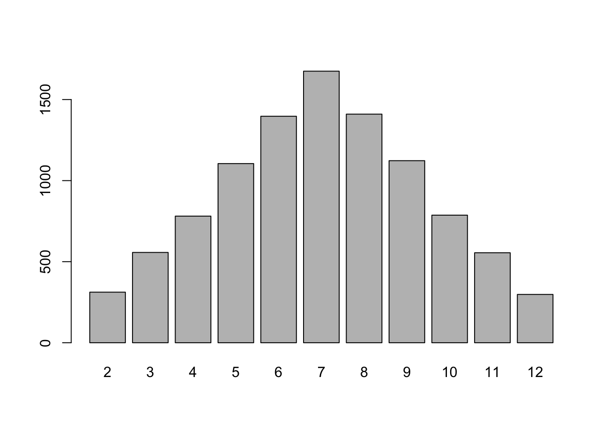
── Attaching core tidyverse packages ──────────────────────── tidyverse 2.0.0 ──
✔ dplyr 1.1.4 ✔ readr 2.1.6
✔ forcats 1.0.1 ✔ stringr 1.6.0
✔ ggplot2 4.0.1 ✔ tibble 3.3.0
✔ lubridate 1.9.4 ✔ tidyr 1.3.2
✔ purrr 1.2.0
── Conflicts ────────────────────────────────────────── tidyverse_conflicts() ──
✖ dplyr::filter() masks stats::filter()
✖ dplyr::lag() masks stats::lag()
ℹ Use the conflicted package (<http://conflicted.r-lib.org/>) to force all conflicts to become errors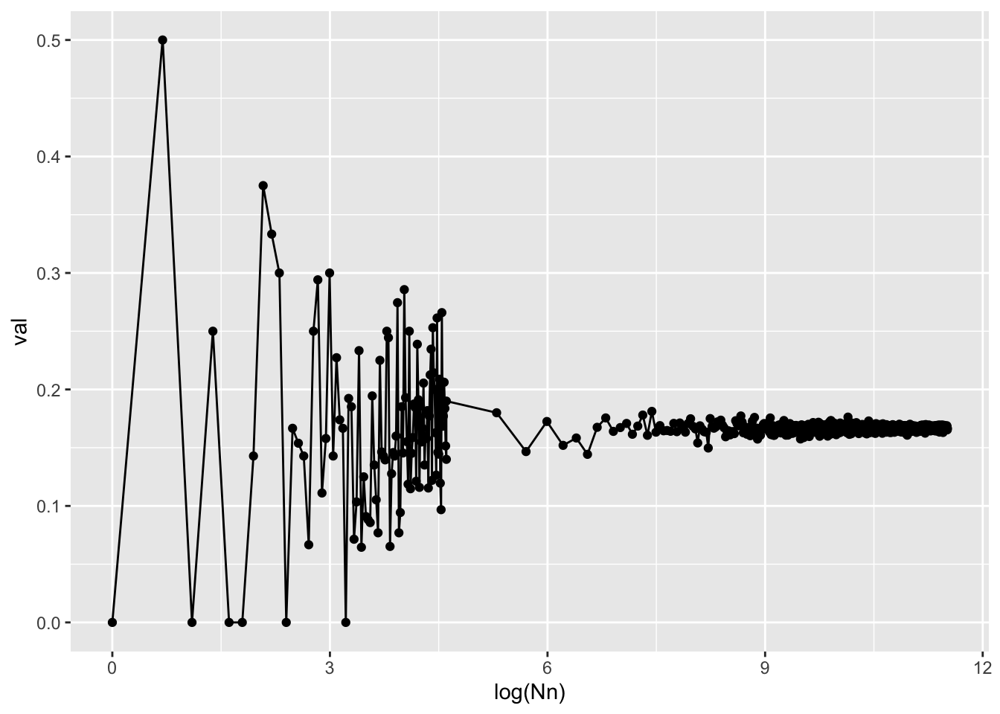
devs = (y - mean(y))^2
head(y)[1] 7 7 3 2 6 8unique(devs) [1] 0.00000121 15.99120121 24.98900121 0.99780121 1.00220121 4.00440121
[7] 16.00880121 9.00660121 25.01100121 3.99560121 8.99340121mean(devs)[1] 5.887299barplot(table(devs))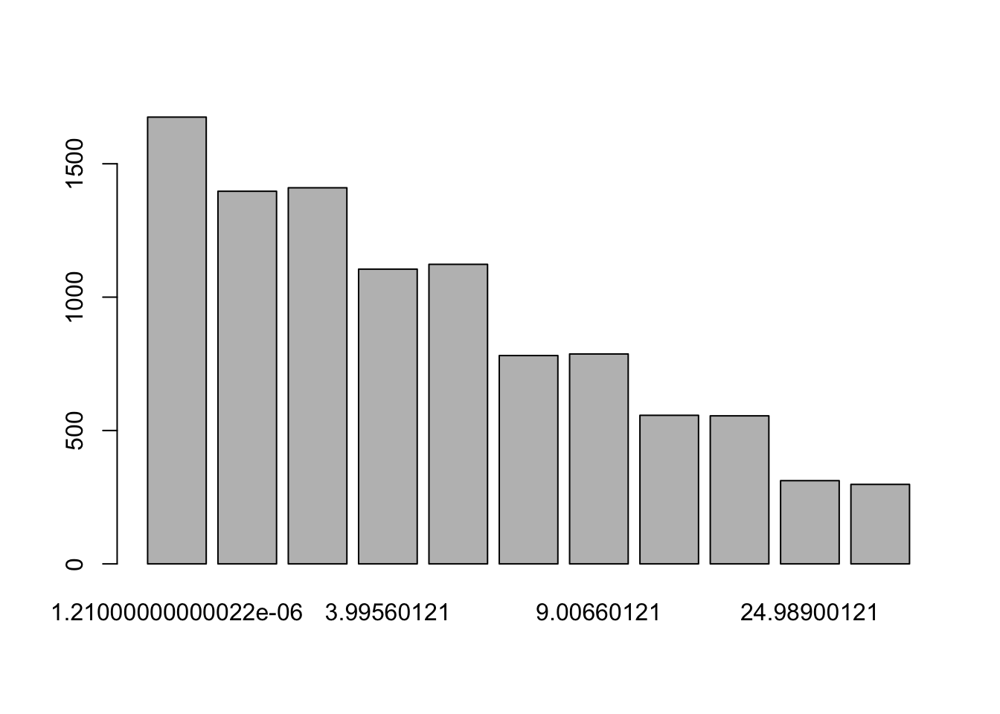
N = 10000 #number of measurements
x1 = 4 # first dice (values are from 1 to 6)
x2 = sample(1:6,N, replace=T) # first dice (values are from 1 to 6)
y = x1 + x2barplot(table(4+x2)/N)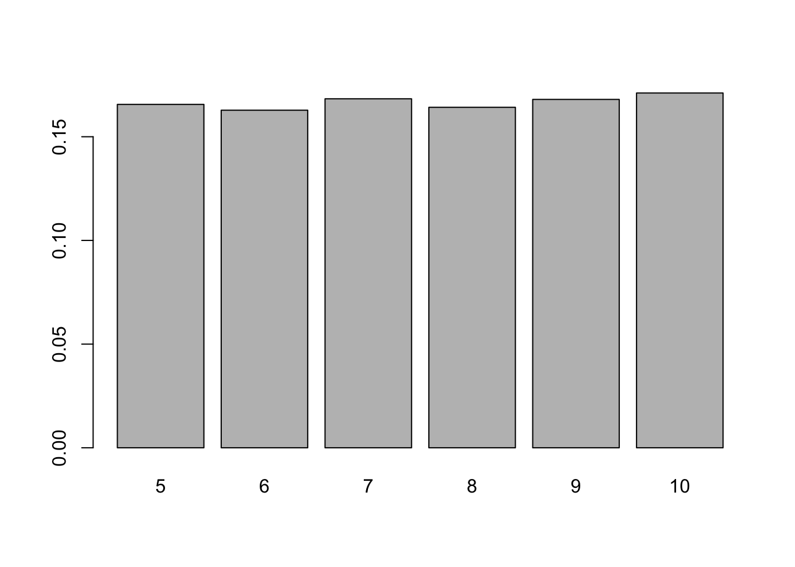
N = 10000 #number of measurements
x = sample(1:1000,100, replace=T) # your hundred dices
head(x)[1] 992 994 78 860 897 900y =0
for(i in x){y = y+sample(1:i, N, replace = T)/i}
head(y)[1] 44.80009 48.46255 50.94224 46.47149 46.07926 47.52640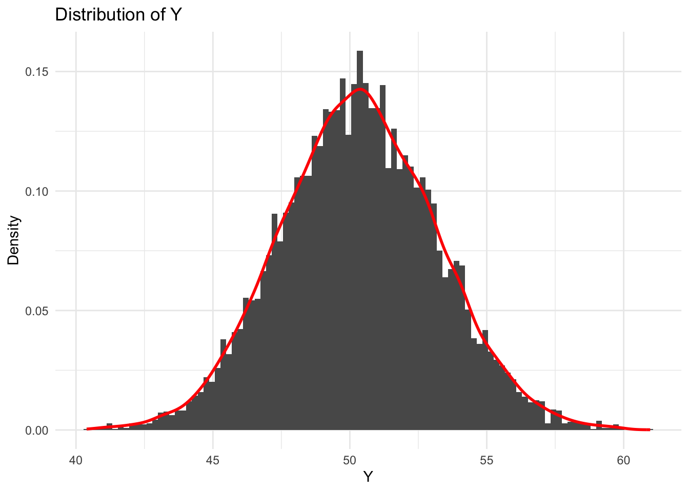
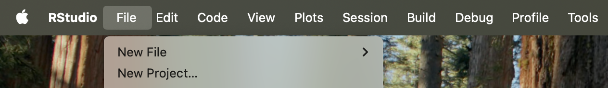


tidyverse is extremely usefulinstall.packages("tidyverse")
library(tidyverse)library(readxl) # needed to read excel without "rio"
communes <- read_excel("data/demographics2024.xlsx") # relative path
communes <- read_excel("/Users/Desktop/Website/methods_policyevaluation/slides/session1/data/") # absolute path
#using the "rio" package
library(rio)
communes <- import("data/demographics2024.xlsx")library(readxl)
library(tidyverse)
communes <- read_excel("data/demographics2024.xlsx") # relative path
len_com <- length(communes %>% pull(codecommune))
sample_com <- sample(1:len_com, N, replace = FALSE)
comms_rand <- NULL
a <- 0
for(i in sample_com){
a =a+1
comms_rand[a] = (communes %>% pull(codecommune))[i]}
comm_r <- communes %>% filter(codecommune %in% comms_rand) head(comm_r, 3)# A tibble: 3 × 43
codecommune Year codedep agri indp cadr pint empl ouvr chom pact
<chr> <dbl> <chr> <dbl> <dbl> <dbl> <dbl> <dbl> <dbl> <dbl> <dbl>
1 01001 2024 01 0 39 33 14 86 147 26 319
2 01005 2024 01 11 37 56 192 185 177 18 658
3 01006 2024 01 0 0 0 34 23 23 0 80
# ℹ 32 more variables: age <dbl>, popf <dbl>, francais <dbl>, etranger <dbl>,
# prixbien <dbl>, capitalratio <dbl>, npropri <dbl>, nlogement <dbl>,
# pop <dbl>, revmoyfoy <dbl>, revtot <dbl>, recetteimpotslocaux <dbl>,
# recette <dbl>, baseimpotslocaux <dbl>, nodip <dbl>, sup <dbl>,
# Libellé <chr>, Exploitations <dbl>, Personnes <dbl>, UTA <dbl>, SAU <dbl>,
# PBS <lgl>, dens <chr>, densaav <chr>, dens7 <chr>, ntot <dbl>, pagri <dbl>,
# pindp <dbl>, pcadr <dbl>, ppint <dbl>, pempl <dbl>, pouvr <dbl>
# Nominal : the density typology of communes
unique(comm_r$dens)[1] "Rural" "Urbain intermédiaire" "Urbain dense" table(comm_r$dens)
Rural Urbain dense Urbain intermédiaire
8733 225 1042 summary(comm_r$dens) Length Class Mode
10000 character character # Continuous : the median income in those communes
summary(comm_r$revmoyfoy) Min. 1st Qu. Median Mean 3rd Qu. Max. NA's
11047 25795 29586 31193 34577 167966 7 range(comm_r$revmoyfoy, na.rm = TRUE)[1] 11047.14 167966.33summary((comm_r %>% drop_na(revmoyfoy))$revmoyfoy) #dropping NA's Min. 1st Qu. Median Mean 3rd Qu. Max.
11047 25795 29586 31193 34577 167966 #replacing the NA's
comm_r <- comm_r %>% mutate(revmoyfoy = ifelse(is.na(revmoyfoy), mean(revmoyfoy, na.rm =TRUE), revmoyfoy))
summary(comm_r$revmoyfoy) Min. 1st Qu. Median Mean 3rd Qu. Max.
11047 25797 29592 31193 34573 167966 mu <- comm_r %>% select() %>% group_by()
ggplot(comm_r, aes(x= revmoyfoy, color = dens)) + geom_density()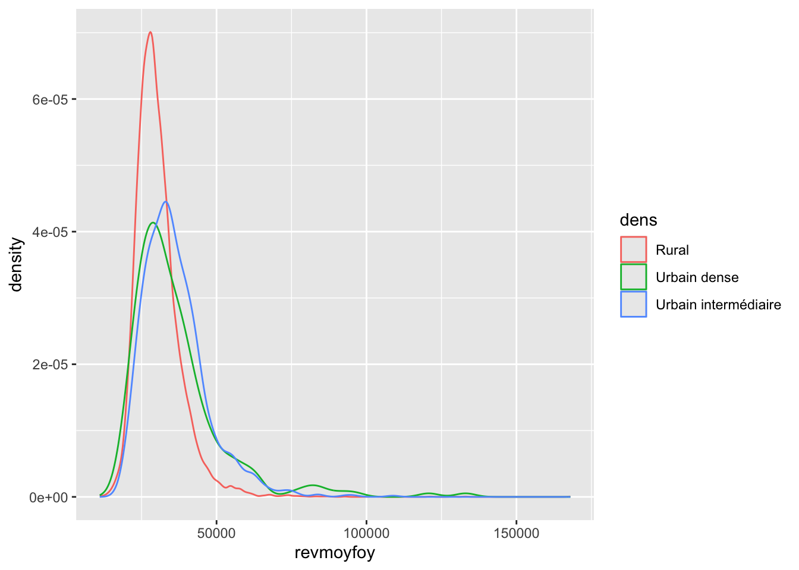
ggplot(comm_r, aes(x= log(revmoyfoy), color = dens)) + geom_density()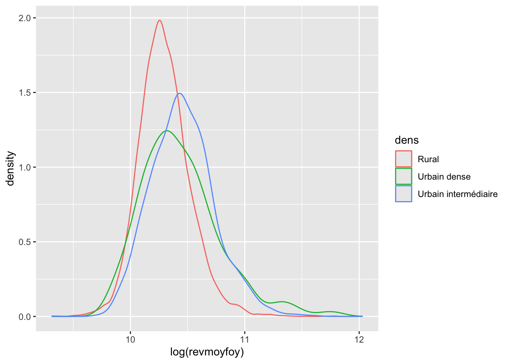
mean(comm_r$revmoyfoy)[1] 31192.55mean((comm_r %>% filter(dens == "Rural"))$revmoyfoy)[1] 30464.99mean((comm_r %>% filter(dens == "Urbain dense"|dens == "Urbain intermédiaire"))$revmoyfoy)[1] 36207.41\[\begin{equation} \text{E}(\text{MI}| \text{dens} = \text{Rural}) \le \text{E}(\text{MI}) \end{equation}\]
t_test_result <- t.test(
rural_income,
urban_income,
alternative = "two.sided",
conf.level = 0.99,
var.equal = FALSE # Use Welch's t-test for unequal variances
)t_test_result
Welch Two Sample t-test
data: rural_income and urban_income
t = -16.716, df = 1426.8, p-value < 2.2e-16
alternative hypothesis: true difference in means is not equal to 0
99 percent confidence interval:
-6628.485 -4856.351
sample estimates:
mean of x mean of y
30464.99 36207.41